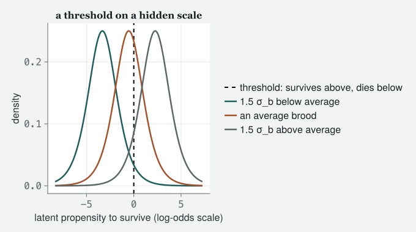
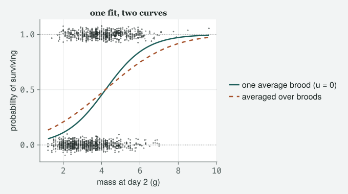
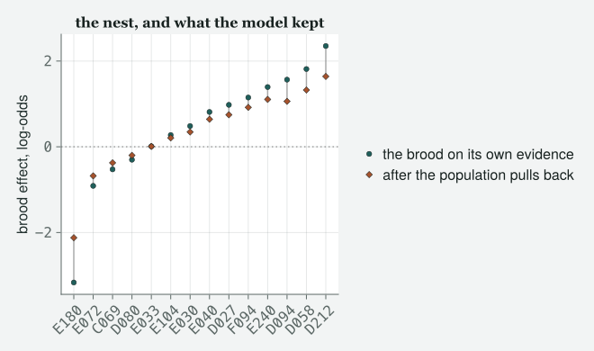
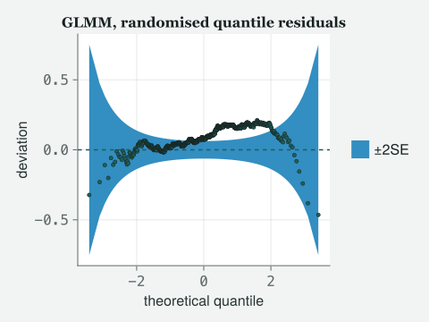
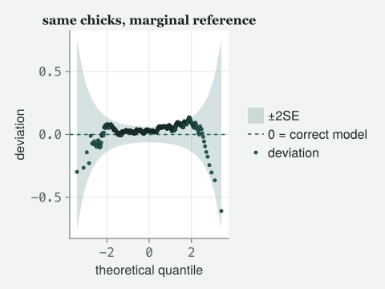
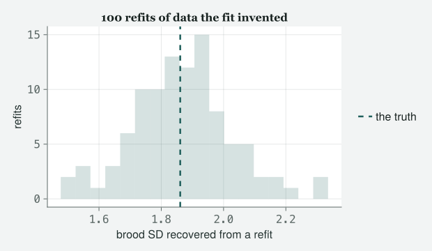
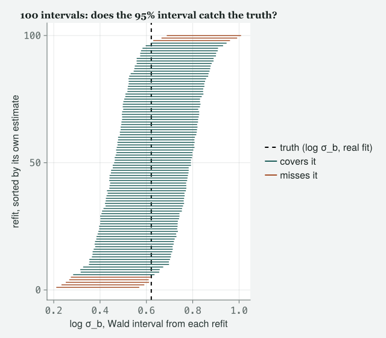

Class 3 promised a repair it could not perform, because the file it was given never recorded which nest a chick came from. Here is the file that did — and the standard error the same model prints on it turns out to be answering a different question, with an interval that is wrong for either.
Draft
All ten classes of version 1 run end to end (1–10), with Appendix A, the preface and the coda. Every number and figure on this page was computed when the site was built; the book itself is still being written.
Engines DRM.jl 0.7.1 at 26f4c4ddc (Julia 1.10.0) · drmTMB 0.7.0 (R 4.6.0) Provenance Every block of Julia code on this page ran when the site was built, including the three that fail. Nothing is pasted from a session you cannot see. The one R box was run once by hand, on the date shown (2026-09-07): all four of its blocks come from a single Rscript run against the same archived file, and the box says so; the script is kept at data/ch9/ch9-r-box.R. Caveat The data are real. These are the Lundy Island house sparrow chicks of the author’s 2012 course, read directly from the archived data/2012/SparrowSurvival.csv, which is the brood-identified version of the file Class 3 used (where the file comes from is recorded in data/2012/README.md). Nothing here is invented; the simulated quantities are drawn from a model fitted to that file, from random-number generators set up in the code you can see.
A note on the data, and it is the note Class 3 promised. Class 3 fitted chick survival with Binomial() on data/2012/ChickSurvival.csv and said, in writing, that the chicks in a nest are not strangers and that the file could not be repaired, because it recorded how big each brood was and never which brood. Class 6 then freed the correlation between rows on data/2012/BodySize.csv, where the repeated thing was a recapture. This chapter is what happens when the same population is handed over with the nest written down. Same birds, same island, same question, one more column.
Objectives
By the end of this class you should be able to:
Fit a generalised linear mixed model — a family and a grouping in the same call — and say which constant each of the two is freeing.
Predict, before you fit, what adding the grouping will do to a standard error, and say by how much it was wrong to leave it out.
Read a variance component that lives on the link scale — the scale of the model’s straight-line part, before it is turned back into a probability — and turn it into an intraclass correlation, saying out loud which scale that correlation lives on and why the scale had to be invented.
Say why a GLMM’s coefficient is a conditional odds ratio, why averaging over groups shrinks it towards zero, and which of the two your reader wanted.
Decide from the data file itself whether a second grouping is estimable, rather than from whether the software agreed to run — and tell a limitation of your engine apart from a fact about your data.
The class
Itchy’s office, 9:00 am. TOTO has brought the same chick file he brought
to Class 3 and the grudge that goes with it. MOMO has read ahead and is
suspicious of the word “both”. EDDIE is here for the part where the two
halves of the course meet. JARO, who is a statistician and turns up for
the hard weeks, has been promised coffee.
Itchy
Class 3 gave you the shape of the noise. Class 6 gave you the
correlation between rows. Every constant either of those classes freed
is still free today, and today you free both in one call. Toto, remind
the room what I told you in Class 3 and could not deliver.
Toto
That the chicks in one nest are not independent, that my standard error
was too small, and that the file could not be fixed because it never
said which nest.
Itchy
And here is the file that says. Load it the way Class 6 taught you.
# tools/figures.jl includes tools/theme_itchy.jl itself, so one include does both.include("../tools/figures.jl")usingDRM, DataFrames, CSV, Statistics, Random, Printf, CairoMakieimportDistributionsset_theme!(theme_itchy(:light))# Class 6's recipe, applied without thinking about it. Watch what it does.raw = CSV.read("../data/2012/SparrowSurvival.csv", DataFrame; missingstring ="NA")println("rows, columns: ", size(raw))describe(raw, :eltype, :nmissing)
rows, columns: (1950, 12)
12×3 DataFrame
Row
variable
eltype
nmissing
Symbol
DataType
Int64
1
ChickNo
String7
0
2
Sex
String1
0
3
Survival
String1
0
4
Mass2
String7
0
5
BroodSize
String1
0
6
HatchingSuccess
String1
0
7
EggNo
String1
0
8
JulianDate
String3
0
9
Dad
String7
0
10
Mum
String7
0
11
BroodNo
String7
0
12
Year
Int64
0
Momo
Every column is text and nothing is missing.
Itchy
Every column is text and nothing is missing, which is two lies for the
price of one. Fit it anyway, because I want the engine to be the one who
tells you.
drm(bf(@formula(Survival ~ Mass2 + (1|BroodNo))), Binomial(); data = raw)
It is the same error with a different cause, which is why you get it
twice in one book. In Class 6 the file said NA, so we told
the reader that NA means missing. This file, written by the
same person in the same decade, leaves the cell empty
instead. And missingstring = "NA" does not addNA to the list of missing markers. It
replaces the list, and the empty string was on the list
we just threw away. Name both.
raw = CSV.read("../data/2012/SparrowSurvival.csv", DataFrame; missingstring = ["NA", ""])println("missing values per column:")println(describe(raw, :nmissing))chicks =dropmissing(raw, [:Survival, :Mass2, :BroodNo])mkpath("../data/ch9")CSV.write("../data/ch9/chicks-broods.csv", chicks)n =nrow(chicks)broods =sort(unique(chicks.BroodNo))J =length(broods)class3 = CSV.read("../data/2012/ChickSurvival.csv", DataFrame)@printf("kept %d of %d rows on %d broods\n", n, nrow(raw), J)@printf("survived: %d of %d (%.4f)\n", sum(chicks.Survival), n, mean(chicks.Survival))@printf("Class 3's file, for comparison: %d rows, %d columns, no brood identifier\n",nrow(class3), ncol(class3))
missing values per column:
12×2 DataFrame
Row │ variable nmissing
│ Symbol Int64
─────┼───────────────────────────
1 │ ChickNo 0
2 │ Sex 0
3 │ Survival 75
4 │ Mass2 275
5 │ BroodSize 135
6 │ HatchingSuccess 80
7 │ EggNo 97
8 │ JulianDate 74
9 │ Dad 0
10 │ Mum 0
11 │ BroodNo 0
12 │ Year 0
kept 1600 of 1950 rows on 484 broods
survived: 696 of 1600 (0.4350)
Class 3's file, for comparison: 1576 rows, 5 columns, no brood identifier
Itchy
1600 chicks in 484 broods, once we keep the rows that have a survival, a
mass and a nest. Class 3 had 1576 rows and no way of knowing which of
them shared a mother. Count the nests properly before you model them,
exactly as Class 6 counted birds.
per_brood =combine(groupby(chicks, :BroodNo), nrow =>:k)ks =sort(unique(per_brood.k))for k in ks@printf("%3d broods with %d chick%s\n", count(==(k), per_brood.k), k, k ==1 ? "":"s")endmean_k =mean(per_brood.k)@printf("\nmean chicks per brood: %.4f\n", mean_k)# How much of a brood's fate is shared? Count the broods that went one way entirely.by_brood =combine(groupby(chicks, :BroodNo), :Survival => mean =>:p)n_all_died =count(by_brood.p .==0)n_all_lived =count(by_brood.p .==1)n_mixed =count(0.< by_brood.p .<1)@printf("\nbroods where every chick died : %d\n", n_all_died)@printf("broods where every chick lived: %d\n", n_all_lived)@printf("broods that went both ways : %d\n", n_mixed)# "You would not see that many" is a claim, so compute it rather than assert it.# If every chick were an independent flip at the overall rate, a brood of k is# unanimous with probability p^k + (1 - p)^k. Sum that over the broods this file has.p_bar =mean(chicks.Survival)exp_unanimous =sum(p_bar^k + (1- p_bar)^k for k in per_brood.k)@printf("\nunanimous broods, observed : %d\n", n_all_died + n_all_lived)@printf("expected under independent flips at p = %.4f : %.1f\n", p_bar, exp_unanimous)
35 broods with 1 chick
86 broods with 2 chicks
133 broods with 3 chicks
159 broods with 4 chicks
68 broods with 5 chicks
3 broods with 6 chicks
mean chicks per brood: 3.3058
broods where every chick died : 179
broods where every chick lived: 91
broods that went both ways : 214
unanimous broods, observed : 270
expected under independent flips at p = 0.4350 : 140.7
Eddie
More than half the broods went one way entirely.
Itchy
More than half, and that is the clustering staring at you out of the raw
counts before a model has been fitted. 270 of 484 broods had no
disagreement inside them at all, and independent coin flips at the
population rate would have given you about 141. Do not take that from me
as an intuition — it is one line of arithmetic and it is in the cell,
because a chapter that makes the model prove everything else should not
leave its opening claim to your goodwill. Hold the number; it comes back
twice, and the second time it will stop you from drawing a picture you
were expecting.
Momo
In Class 6 you made us predict what the grouping would do to the
standard error before fitting anything.
Itchy
And you are going to do it again, with Class 6’s rule, on this file.
Class 6’s rule is about the predictor, so ask where the
predictor varies.
# A Gaussian random-intercept model on mass itself splits mass's own variance into a# between-brood part and a within-brood part. That split is what Class 6's rule needs.mass_fit =drm(bf(@formula(Mass2 ~1+ (1|BroodNo))), Gaussian(); data = chicks)sd_between =re_sd(mass_fit)[:BroodNo]sd_within =first(sigma(mass_fit))icc_mass = sd_between^2/ (sd_between^2+ sd_within^2)@printf("mass, between-brood SD : %.4f g\n", sd_between)@printf("mass, within-brood SD : %.4f g\n", sd_within)@printf("mass is %.1f%% between broods and %.1f%% within them\n",100* icc_mass, 100* (1- icc_mass))
mass, between-brood SD : 0.7886 g
mass, within-brood SD : 0.9104 g
mass is 42.9% between broods and 57.1% within them
Momo
Mostly within. In Class 6 tarsus was almost entirely between
birds, and the standard error was too small. Mass is the other way
round, so by that rule the standard error should not go up much.
Itchy
That is Class 6’s rule applied correctly, and that is its honest
prediction. Write it on the board. In twenty minutes the standard error
will have gone up sharply, and finding out what the rule does not cover
on a nonlinear link is worth more to you than a rule that was never
wrong.
The model Class 3 could fit
Itchy
First, Class 3’s model, on Class 9’s file. Same family, same formula, no
grouping. I want the comparison to be like for like, so both fits get
the same 1600 chicks.
glm_fit =drm(bf(@formula(Survival ~ Mass2)), Binomial(); data = chicks)glm_fit
Distributional regression fit (Binomial)
nobs = 1600 logLik = -986.8062 converged = true
Mean model (μ):
H0: coefficient = 0
Coef. Std.Error z Pr(>|z|)
(Intercept) -2.7570 0.1934 -14.2521 4.351e-46
Mass2 0.6798 0.0504 13.4938 1.7e-41
Toto
One block, mu, and no σ table. That is Class 3 exactly.
Itchy
That is Class 3 exactly, and everything Class 3 told you about it is
still true. The link is still the logit, the variance is still decreed
to be p(1 − p), and for a nought-or-one response that decree is
arithmetic rather than a promise. Nothing about the shape is
wrong here. What is wrong is the sentence Class 3 warned you about and
could not repair.
Both at once
Itchy
One term. The same term as Class 6, in a call with a different family.
logit(p_ij) = β0 + β1 x_ij + u_j, with u_j ~ N(0, σ_b²) and y_ij ~
Bernoulli(p_ij)
Itchy
Chick i in brood j. Read it against Class 6’s line and
notice what moved. β0, β1 and u_j are the same three symbols doing the
same three jobs. The random effect is still normal, still centred on
zero, still summarised by one spread. Two things changed: there is a
link wrapped around the left-hand side, so the brood’s
nudge is a nudge in log-odds; and there is no σ,
because the family already spent it. Momo.
Momo
So the random effect is on the log-odds scale and not on the scale of
anything I can see.
Itchy
Not on the scale of anything you can see, and that is the price of the
hour. Write it down now, because in fifteen minutes I am going to hand
you a number that looks like a correlation and it will live on that
invisible scale too.
glmm_fit =drm(bf(@formula(Survival ~ Mass2 + (1|BroodNo))), Binomial(); data = chicks)glmm_fit
Distributional regression fit (Binomial)
nobs = 1600 logLik = -903.2167 converged = true
Mean model (μ):
H0: coefficient = 0
Coef. Std.Error z Pr(>|z|)
(Intercept) -3.9485 0.3327 -11.8697 1.7e-32
Mass2 0.9399 0.0812 11.5690 5.917e-31
Random-effect SD (log σ_b):
H0: coefficient = 0 on log σ_b
NOT the σ_b = 0 boundary
Coef. Std.Error z Pr(>|z|)
BroodNo 0.6210 0.0874 7.1063 1.192e-12
Toto
Same verb, same box. And the block at the bottom is back, but the σ
table is still gone.
Itchy
Both of those are the point. The random-effect block is Class 6’s second
variance component; the absent σ is Class 3’s decree. This is the first
fit in the book that carries both, and the heading on the new block is
the same warning it carried in Class 6. Read it, Momo.
Momo
“NOT the σ_b = 0 boundary.”
Itchy
Same engine, same refusal, same reason, and Class 8 is still where it
gets its hour. Now put the two fits side by side and watch which numbers
move.
no brood with brood ratio
beta0 -2.7570 -3.9485 1.4322
beta1 0.6798 0.9399 1.3827
SE(beta0) 0.1934 0.3327 1.7196
SE(beta1) 0.0504 0.0812 1.6128
AIC 1977.61 1812.43 -165.18
Toto
The standard error went up by more than half.
Itchy
By a factor of 1.61, with Momo’s prediction on the board saying it
should not have. The fixed-effects fit on these same 1600 chicks reports
an interval 38.0% narrower than the mixed model’s — and I am going to
make you wait before I tell you what that 38.0% measures, because it is
not what it looks like and it is not what Class 6 measured. And AIC fell
by 165, which is not a close call by anybody’s rule of thumb, so this is
not a term you can argue your way out of on grounds of parsimony.
Toto
In Class 3 you told me my interval was too narrow.
Itchy
I did, and it was, and this page is not the arithmetic that shows it.
Class 3’s fit was on a different file, with 1576 different rows and no
brood column, and the two row sets cannot even be matched up. So no
number here is Class 3’s number. What you have is Class 3’s
model, refitted on Class 9’s chicks, which is the only
honest comparison available and is exactly why I insisted both fits get
the same 1600.
Momo
In Class 6 the slope barely moved and only the standard error did. This
slope moved.
Itchy
Momo has found the difference between Class 6 and today, and it is the
most important sentence of the hour, so we are going to spend ten
minutes on it after the variance component. Note the size for now: the
coefficient is a factor of 1.38 larger once broods are in the model. In
a Gaussian mixed model that essentially does not happen. In a GLMM it
happens every time, and it is not a bias, a bug or an
improvement.
What the brood variance says
Itchy
Get the two pieces out and give them the scale they live on.
sigma_b =re_sd(glmm_fit)[:BroodNo] # brood SD, on the LOG-ODDS scaleV_brood = sigma_b^2V_link =pi^2/3# variance of a standard logistic distributionicc = V_brood / (V_brood + V_link)@printf("sigma_b, brood SD on the logit scale : %.4f\n", sigma_b)@printf("brood variance : %.4f\n", V_brood)@printf("logistic latent variance, pi^2 / 3 : %.4f\n", V_link)@printf("latent-scale ICC : %.4f\n", icc)println("\nvc(glmm_fit): ", vc(glmm_fit))
Where did π² over three come from? Nothing in the data has a π in it.
Itchy
Nothing in the data does, and that is exactly why the number needs a
label. Class 6 divided the between-bird variance by the between-bird
variance plus σ², and σ was a real spread in real millimetres. Here
there is no σ. The family spent it. So to get a ratio at all you have to
invent a denominator, and the standard move is to imagine a
latent continuous variable underneath the coin flip:
the chick has a hidden propensity, it survives if the propensity clears
a threshold, and a logit link is what you get when that hidden
propensity has a standard logistic distribution. A standard logistic
distribution has variance π²/3. That is the whole derivation, and
Nakagawa and Schielzeth (2010) work it through properly along with the
alternatives.
Eddie
I still cannot picture “hidden propensity” from a sentence.
Itchy
Then stop trying to picture the coin flip and picture what is underneath
it. Same shape every time — a standard logistic curve, the one that gave
you π²/3 — just slid sideways by however far that brood’s own u_j pushes
it. Slide it far enough and the whole curve ends up on one side of the
line.
eta_bar =mean(b_glmm[1] .+ b_glmm[2] .* chicks.Mass2) # an average chick, fixed part onlymus = eta_bar .+ [-1.5, 0.0, 1.5] .* sigma_blabels_u = ["1.5 σ_b below average", "an average brood", "1.5 σ_b above average"]zgrid =range(minimum(mus) -5, maximum(mus) +5, length =400)fig =Figure(size = (680, 380))ax =Axis(fig[1, 1]; xlabel ="latent propensity to survive (log-odds scale)", ylabel ="density", title ="a threshold on a hidden scale")vlines!(ax, [0.0]; color =:black, linestyle =:dash, linewidth =2, label ="threshold: survives above, dies below")for (mu, lab) inzip(mus, labels_u) dens = Distributions.pdf.(Distributions.Logistic(mu, 1.0), zgrid)lines!(ax, zgrid, dens; linewidth =2.5, label = lab)end# legend outside the axis so it can never hide a group (reviewer: pond P05 sat under it)Legend(fig[1, 2], ax; framevisible =false)fig

Figure 1: The logit link as a threshold on a hidden scale. Each curve is the same standard logistic density — one chick’s own luck, the assumed distribution behind π²/3 — centred at a different brood’s linear predictor: an average-mass chick in an average brood (middle), and the same chick in a brood pushed one and a half population standard deviations of σ_b to either side. A chick survives if its point on this scale clears the dashed threshold at zero, and the area of a curve to the right of that line is its brood’s survival probability. A random effect only slides the curve; it never changes its shape — which is why a brood pushed far enough ends up almost entirely on one side of the line, the mechanism behind the unanimous broods counted at the top of this chapter.
Momo
So the number is a ratio of one thing we estimated to one thing we
assumed.
Itchy
It is a ratio of one thing we estimated to one thing the link
function assumed on your behalf, which is worse than assuming
it yourself, because you were not asked. Say it out loud every time:
latent-scale. About 51% of the variation in the latent
propensity to survive is differences between broods, and the rest is a
chick differing from its own siblings. Choose a probit
link instead — the same idea as logit, a threshold on a hidden
propensity, but built from the normal curve instead of the logistic one
— and the denominator becomes one rather than π²/3, and the number
changes without a single chick changing. It is a real quantity and it is
scale-bound, and a repeatability quoted without its scale is not a
repeatability, it is a rumour.
Eddie
Is there a version on the data scale?
Itchy
There is more than one, which is the honest answer and the reason I am
not computing one today. Nakagawa, Johnson and Schielzeth (2017) set out
the family of them and when each applies; the latent-scale one is the
one that is comparable across studies with the same link, and it is the
one to report first. What you may not do is compute the latent one and
describe it as “the proportion of variation in survival between broods”,
because survival is a nought or a one and its variation is not what you
just divided.
Toto
And can I test whether broods differ at all?
Itchy
You can ask, and the engine will answer and then take part of the answer
back. Watch.
# The test, on its own, so that what the engine says comes back on its own too.lr =lrtest(glm_fit, glmm_fit)lrb =lrt_boundary(glmm_fit, glm_fit; q =1);
┌ Warning: lrtest: `full` adds variance-component block(s) [:resd] that `reduced` lacks, so this compares a variance component against 0 — a BOUNDARY null. The reported χ²(1) p-value is INVALID there (conservative: too large, so the test loses power); the correct reference is a chi-bar-square mixture. Use `lrt_boundary(full, reduced; q = <#components>)` (or a parametric bootstrap) for a boundary-correct p-value.
@printf("lrtest : chi2 = %.2f on %d df, p = %.3e\n", lr.statistic, lr.dof, lr.pvalue)@printf("lrt_boundary : chi2 = %.2f, q = %d, p = %.3e (naive p = %.3e)\n", lrb.statistic, lrb.q, lrb.pvalue, lrb.pvalue_naive)
lrtest : chi2 = 167.18 on 1 df, p = 3.057e-38
lrt_boundary : chi2 = 167.18, q = 1, p = 1.529e-38 (naive p = 3.057e-38)
Momo
It warned us before it answered.
Itchy
It warned you that the null you asked about sits on the edge of the
space the parameter lives in — a variance cannot be negative — so the
ordinary chi-squared reference is the wrong one, and it named the
function that uses the right one. Here the two p-values differ by a
factor of two and both are far past any threshold anybody uses, so the
correction changes nothing you would do. That is the lucky
case. Class 8 is the hour where the same correction is the difference
between a result and no result, and today’s warning is there so that you
recognise it when it matters. Meanwhile: notice that the interesting
number is not the p-value at all. It is 0.51, and no p-value in this
chapter tells you that.
Jaro’s ten minutes: whose odds ratio is it?
Jaro
May I have the slope back, please. Both slopes.
Itchy
Take them.
or_glmm =exp(b_glmm[2])or_glm =exp(b_glm[2])@printf("GLMM slope %.4f -> odds ratio %.4f\n", b_glmm[2], or_glmm)@printf("GLM slope %.4f -> odds ratio %.4f\n", b_glm[2], or_glm)
GLMM slope 0.9399 -> odds ratio 2.5598
GLM slope 0.6798 -> odds ratio 1.9734
Jaro
Two odds ratios, both correct, and they answer different questions. The
mixed one says: take one brood, hand it a chick a gram
heavier, and that chick’s odds of surviving are multiplied by 2.56. It
is a statement about a comparison inside a nest, with the nest
held where it is. That is a conditional odds ratio.
Toto
And the other one?
Jaro
The other one is closer to a statement about the population as a whole:
take all the chicks at one mass and all the chicks at a mass one gram
higher, average over whatever nests they happen to be in, and compare.
That is a marginal odds ratio, and it is smaller. It is
always smaller on a logit link, and the same holds for
probit and complementary log-log — a third link, built
from a lopsided curve rather than the symmetric ones logit and probit
use. The effect has a name: non-collapsibility.
Eddie
Any nonlinear link, then.
Jaro
No — and I am glad you said it, because that is the sentence people get
wrong. The log link, the one this book taught you in
Classes 3 to 5, is collapsible for the rate ratio. Write the Poisson
mean out: E[Y | x, u] = exp(β0 + β1 x + u). Averaging over u multiplies
the whole thing by one constant, which moves the
intercept and leaves β1 exactly where it was. So
“nonlinear” is not the criterion. Logit is.
Momo
Always smaller. Prove it rather than saying it.
Itchy
We will not prove it, we will make the model prove it, which is this
book’s method. The fit believes a distribution of broods. Draw broods
from it, draw chicks in those broods, fit the model that ignores broods,
and see what that model recovers.
logistic(z) =1/ (1+exp(-z))bidx =Dict(bn => i for (i, bn) inenumerate(broods))row_brood = [bidx[bn] for bn in chicks.BroodNo]eta_fixed = b_glmm[1] .+ b_glmm[2] .* chicks.Mass2 # the fixed part, u = 0# One replicate: draw a brood effect for every brood, flip every chick's coin at# its own probability, then fit the model that pretends broods do not exist.rng_marg =MersenneTwister(20260907)marg_slopes =Float64[]for _ in1:1000 u = sigma_b .*randn(rng_marg, J) p =logistic.(eta_fixed .+ u[row_brood]) y =Int.(rand(rng_marg, n) .< p) naive =drm(bf(@formula(Survival ~ Mass2)), Binomial(); data =DataFrame(Survival = y, Mass2 = chicks.Mass2))push!(marg_slopes, coef(naive, :mu)[2])endmarg_slope =mean(marg_slopes)marg_mcse =std(marg_slopes) /sqrt(length(marg_slopes))attenuation = marg_slope / b_glmm[2]# The SPREAD of those slopes is the naive estimator's true sampling SD -- the only# ruler that measures the naive interval against the target the naive fit is aiming at.se_true =std(marg_slopes)naive_short =1- se_glm[2] / se_truegap_in_se = (b_glm[2] - marg_slope) / se_true@printf("conditional slope (the GLMM) : %.4f OR %.4f\n", b_glmm[2], or_glmm)@printf("marginal slope, %d simulated worlds : %.4f OR %.4f MC SE %.4f\n",length(marg_slopes), marg_slope, exp(marg_slope), marg_mcse)@printf("what the real naive fit gave : %.4f OR %.4f\n", b_glm[2], or_glm)@printf("\nattenuation, marginal / conditional : %.4f\n", attenuation)@printf("naive slope, the SE it printed : %.4f\n", se_glm[2])@printf("naive slope, its TRUE sampling SD : %.4f -> what it printed is %.1f%% too small\n", se_true, 100* naive_short)@printf("real naive fit minus simulated mean, in units of that true SD: %.2f\n", gap_in_se)
conditional slope (the GLMM) : 0.9399 OR 2.5598
marginal slope, 1000 simulated worlds : 0.6073 OR 1.8355 MC SE 0.0018
what the real naive fit gave : 0.6798 OR 1.9734
attenuation, marginal / conditional : 0.6461
naive slope, the SE it printed : 0.0504
naive slope, its TRUE sampling SD : 0.0574 -> what it printed is 12.2% too small
real naive fit minus simulated mean, in units of that true SD: 1.26
Jaro
There it is, and it did not need a theorem. Averaging over broods keeps
65% of the conditional slope and throws the rest away. And look at the
third line: the slope the fixed-effects fit got on the real chicks sits
1.26 standard deviations from what the mixed model predicts that
estimator would give. That is inside noise. The naive fit was
not estimating the wrong thing badly. It was estimating a different
thing, roughly correctly, with a standard error that was wrong for
either.
Momo
You measured that gap against the last line and not against the standard
error the fit printed.
Jaro
Because the standard error the fit printed is the thing under
investigation, and a suspect ruler cannot check itself. The simulation
has handed you the honest one: 0.0574, against the 0.0504 the fit
reported. Against the printed one the gap would read 1.44, which is
bigger and wrong.
Toto
So the fixed-effects coefficient was not a mistake.
Itchy
The coefficient was a defensible marginal estimate. The
interval was a fiction. Those are separable and you must keep
them separate, because the fix for the second is not the fix for the
first. And now I can pay the debt from twenty minutes ago. Momo, read me
the two shortfalls.
Momo
38.0% against the mixed model’s standard error, and 12.2% against its
own.
# The naive-to-GLMM gap (se_ratio, above) has two pieces: genuine information lost# to clustering (naive_short) and the two SEs answering for coefficients of# different SIZE. Rescaling se_true by the coefficient ratio would reproduce# se_glmm[2] if size were the whole story -- see how close it gets, on a log# scale, against the full gap se_ratio already names.coef_ratio = b_glmm[2] / marg_slopese_ratio_true = se_glmm[2] / se_truelog_share =log(se_ratio_true) /log(se_ratio)cv_glmm = se_glmm[2] / b_glmm[2]cv_naive = se_true / marg_slopedesign_effect =1+ (mean_k -1) * icc_mass * iccdesign_shortfall =1-1/sqrt(design_effect)@printf("coefficient ratio, conditional / marginal : %.4f\n", coef_ratio)@printf("SE ratio, GLMM SE / naive's TRUE sampling SD : %.4f\n", se_ratio_true)@printf("share of the naive-to-GLMM log gap from rescaling : %.1f%%\n", 100* log_share)@printf("coefficient of variation, SE / coefficient, at its own target\n")@printf(" GLMM : %.4f\n", cv_glmm)@printf(" naive : %.4f\n", cv_naive)@printf("design-effect heuristic 1 + (m-1)*ICC : %.4f -> %.1f%% shortfall\n", design_effect, 100* design_shortfall)
coefficient ratio, conditional / marginal : 1.5477
SE ratio, GLMM SE / naive's TRUE sampling SD : 1.4157
share of the naive-to-GLMM log gap from rescaling : 72.7%
coefficient of variation, SE / coefficient, at its own target
GLMM : 0.0864
naive : 0.0945
design-effect heuristic 1 + (m-1)*ICC : 1.5068 -> 18.5% shortfall
Itchy
Two numbers, both correct, measuring different things — which is the
move Jaro just made with the odds ratios, made a second time, and that
is not a coincidence. The 12.2% is the information the naive fit lost by
treating siblings as strangers, and that is the
quantity Class 6’s rule is about. The rest does not close as neatly as
one ratio: the conditional slope is a factor of 1.55 larger than the
marginal one, but the two standard errors themselves differ by a smaller
factor, 1.4157. Rescaling by the coefficient is still most of the story:
on a log scale it accounts for 72.7% of the full gap between the naive
fit’s own printed error and the mixed model’s. And the leftover favours
us. Measure each standard error against the size of the
thing it is estimating — the standard error divided by the estimate,
which statisticians call the coefficient of variation — and ours is the
smaller of the two, 0.0864 against 0.0945, so the mixed model is
genuinely more precise, not merely rescaled. Momo’s prediction was not
wrong about the mechanism it covers. It was answering Class 6’s
question, on a link where the thing being estimated does not change size
when you add the grouping. Mass being 57% within-brood is most of why
the honest shortfall is only 12.2%. There is a rule of thumb for that —
the design effect, how many ordinary independent observations
one clustered observation is worth, built here from the two ratios this
chapter has already computed as 1 + (mean brood size − 1) × ICC — and it
gives 1.51, which turns into a shortfall of 18.5%: the same ballpark,
and not an identity. What the summary should say about this file is that
survival is shared within a nest — a fact about the
response — and not that mass is. Draw the two curves
and the distinction stops being a word.
mass_grid =range(minimum(chicks.Mass2), maximum(chicks.Mass2), length =120)# Conditional: a brood sitting exactly at the population average, u = 0.p_cond =logistic.(b_glmm[1] .+ b_glmm[2] .* mass_grid)# Marginal: average the CURVE over the distribution of broods the fit believes.rng_curve =MersenneTwister(31415)u_draw = sigma_b .*randn(rng_curve, 20_000)p_marg = [mean(logistic.(b_glmm[1] + b_glmm[2] * m .+ u_draw)) for m in mass_grid]rng_jit =MersenneTwister(77)jit =0.03.*randn(rng_jit, n)fig =Figure(size = (680, 380))ax =Axis(fig[1, 1]; xlabel ="mass at day 2 (g)", ylabel ="probability of surviving", title ="one fit, two curves")hlines!(ax, [0.0, 1.0]; color = (:grey, 0.5), linestyle =:dot)scatter!(ax, chicks.Mass2, chicks.Survival .+ jit; markersize =3, color = (:grey, 0.3))lines!(ax, mass_grid, p_cond; linewidth =2.5, label ="one average brood (u = 0)")lines!(ax, mass_grid, p_marg; linewidth =2.5, linestyle =:dash, label ="averaged over broods")# legend outside the axis so it can never hide a group (reviewer: an in-axis# legend at :lt sat over more than a third of the 'survived' scatter here)Legend(fig[1, 2], ax; framevisible =false)fig

Figure 2: Chick survival, jittered, with two logistic curves from the same GLMM: solid for one average brood sitting at the population mean, dashed for the curve averaged over the fit’s own distribution of broods. The dashed curve is flatter everywhere and never gets as close to either edge, because averaging steep curves shifted sideways from one another smooths out the steepness any one brood has.
Eddie
The dashed one is flatter.
Itchy
Flatter everywhere, and it never gets as close to either edge. Averaging
a set of steep curves that are shifted sideways from one another gives
you a shallow curve, because at any mass some broods are already nearly
all dead and some are nearly all alive, and neither of those is moving
much. Both lines come from the same fit and neither is a
compromise. Ask which one your sentence needs. “A gram of mass
multiplies a chick’s odds of surviving within its nest” wants the solid
line. “Heavier chicks in this population survive at a rate of” wants the
dashed one.
The second grouping, and why it is not Year
Momo
The file has a Year column. Chicks in one year share a
summer as much as chicks in one nest share a mother.
Itchy
They do, and that instinct is right, and the file will not let you act
on it. Look at the design before you look at a fit.
spanning =combine(groupby(chicks, :BroodNo), :Year => (x ->length(unique(x))) =>:nyear)n_years =length(unique(chicks.Year))n_mums =length(unique(chicks.Mum))@printf("broods appearing in more than one year : %d of %d\n", count(spanning.nyear .>1), J)@printf("distinct years : %d\n", n_years)@printf("distinct mothers : %d\n", n_mums)# Apply the same test to the OTHER candidate grouping, which is the one set as homework.mums_per_brood =combine(groupby(chicks, :BroodNo), :Mum => (x ->length(unique(x))) =>:nmum)broods_per_mum =combine(groupby(chicks, :Mum), :BroodNo => (x ->length(unique(x))) =>:nb)n_split_broods =count(mums_per_brood.nmum .>1)@printf("broods carrying more than one Mum : %d of %d\n", n_split_broods, J)@printf("broods per mother : %d to %d, median %.0f\n",minimum(broods_per_mum.nb), maximum(broods_per_mum.nb), median(broods_per_mum.nb))println()combine(groupby(chicks, :Year), nrow =>:chicks,:BroodNo => (x ->length(unique(x))) =>:broods,:Survival => mean =>:survived)
broods appearing in more than one year : 0 of 484
distinct years : 4
distinct mothers : 126
broods carrying more than one Mum : 184 of 484
broods per mother : 1 to 17, median 4
4×4 DataFrame
Row
Year
chicks
broods
survived
Int64
Int64
Int64
Float64
1
2003
213
62
0.633803
2
2004
538
168
0.340149
3
2005
612
181
0.433007
4
2006
237
73
0.476793
Itchy
Read the first line. No brood appears in two years, so
BroodNo is not crossed with Year, it
is nested inside it. A crossed design is one where the
same brood turns up in several years and the same year holds several
broods; you have half of that and only half. And read the second line: 4
years. Eddie, you have fitted things.
Eddie
You cannot estimate the spread of four numbers.
Itchy
You cannot usefully estimate the spread of 4 numbers, no. Bolker et
al. (2009) put a working floor at around five or six levels and say
plainly what to do below it: put the factor in as a fixed effect and
stop pretending you are estimating a distribution. But do not take my
word or theirs. Ask the engine and read what comes back — and today the
engine is going to teach you something neither of us intended.
# Year on its own as a random intercept: four levels, and nothing else in the model# competing with them. If four levels is the problem, this is where it shows.chicks_yr =copy(chicks)chicks_yr.YearF =string.(chicks_yr.Year) # a grouping factor must not be a numberyr_only =drm(bf(@formula(Survival ~ Mass2 + (1|YearF))), Binomial(); data = chicks_yr)@printf("(1|YearF) alone : logLik %.4f\n", loglik(yr_only))@printf("standard errors : %s\n", stderror(yr_only))@printf("any infinite? : %s\n", any(isinf, stderror(yr_only)))
(1|YearF) alone : logLik -967.8680
standard errors : [0.21581295886382787, 0.05183611707049071, 0.2720383009296088]
any infinite? : false
Eddie
Three standard errors, and all of them finite.
Itchy
All finite, on four levels, on the fit I had just finished telling you
would fail. It did not. I would still not report that variance component
— four numbers cannot pin down a distribution, and Bolker et al. say so
in print — but the engine did not refuse, and you have watched my
demonstration come apart in front of you. Now add the brood back.
Distributional regression fit (Binomial)
nobs = 1600 logLik = -904.9719 converged = true
Mean model (μ):
H0: coefficient = 0
Coef. Std.Error z Pr(>|z|)
(Intercept) -3.6721 Inf NaN NaN
Mass2 0.9251 Inf NaN NaN
Random-effect SD (log σ_b):
H0: coefficient = 0 on log σ_b
NOT the σ_b = 0 boundary
Coef. Std.Error z Pr(>|z|)
BroodNo 0.4742 Inf NaN NaN
YearF -0.6262 Inf NaN NaN
n_infinite =count(isinf, stderror(yr_fit))@printf("standard errors returned : %s\n", stderror(yr_fit))@printf("how many of them are infinite: %d of %d\n", n_infinite, length(stderror(yr_fit)))@printf("converged : %s\n", is_converged(yr_fit))# A maximised likelihood cannot FALL when a parameter is added: the old fit is still# available to the bigger model, with the extra variance set to zero. Check it.@printf("\nlogLik, brood alone : %.4f\n", loglik(glmm_fit))@printf("logLik, brood AND year : %.4f\n", loglik(yr_fit))@printf("adding a parameter moved it: %s\n",loglik(yr_fit) >loglik(glmm_fit) ? "UP, as it must":"DOWN, which is impossible")
standard errors returned : [Inf, Inf, Inf, Inf]
how many of them are infinite: 4 of 4
converged : true
logLik, brood alone : -903.2167
logLik, brood AND year : -904.9719
adding a parameter moved it: DOWN, which is impossible
Toto
It converged. And every standard error is infinite.
Itchy
It converged, it printed coefficients, and it told you in the only
column that matters that it cannot say how sure it is of any of them.
But read the last three lines before you write a diagnosis, because they
say something the Inf column does not. That log-likelihood
fell when a parameter was added, and a maximised
likelihood cannot do that. So converged = true here is a
claim about where an optimiser stopped, not about where the maximum is,
and this fit is not at the maximum. So the standard errors it printed
were never going to mean anything, whatever else is or is not estimable
here.
Momo
Then what were the infinities?
Itchy
Not what I was about to tell you they were. I was going to say “that is
what a four-level variance component looks like from the inside”, and
the cell above has already refuted me. So try the grouping that is
comfortably above everybody’s floor.
# Mum has far more levels than Year. If the problem is the NUMBER OF LEVELS,# this pair should be fine.chicks_mum =copy(chicks)chicks_mum.MumF =string.(chicks_mum.Mum)mum_only =drm(bf(@formula(Survival ~ Mass2 + (1|MumF))), Binomial(); data = chicks_mum)mum_brood =drm(bf(@formula(Survival ~ Mass2 + (1|BroodNo) + (1|MumF))), Binomial(); data = chicks_mum)@printf("(1|MumF) alone : %d levels, %d infinite SEs, logLik %.4f\n", n_mums, count(isinf, stderror(mum_only)), loglik(mum_only))@printf("(1|BroodNo)+(1|MumF) : %d levels, %d infinite SEs, logLik %.4f\n", n_mums, count(isinf, stderror(mum_brood)), loglik(mum_brood))@printf("\nand again the log-likelihood went %s when the second grouping was added\n",loglik(mum_brood) >loglik(glmm_fit) ? "UP":"DOWN")# Same two groupings, same broods, DIFFERENT FAMILY. If the design were the problem,# this would break in the same way. It is the control the argument needs.gauss_two =drm(bf(@formula(Mass2 ~1+ (1|BroodNo) + (1|MumF))), Gaussian(); data = chicks_mum)@printf("\nGaussian, same two groupings : %d infinite SEs, logLik %.4f\n",count(isinf, stderror(gauss_two)), loglik(gauss_two))@printf("Gaussian, brood alone : %d infinite SEs, logLik %.4f\n",count(isinf, stderror(mass_fit)), loglik(mass_fit))
(1|MumF) alone : 126 levels, 0 infinite SEs, logLik -974.2398
(1|BroodNo)+(1|MumF) : 126 levels, 4 infinite SEs, logLik -908.5090
and again the log-likelihood went DOWN when the second grouping was added
Gaussian, same two groupings : 0 infinite SEs, logLik -2411.4486
Gaussian, brood alone : 0 infinite SEs, logLik -2413.5356
Eddie
Mum on its own is fine, and Mum with brood is
four infinities, exactly like Year.
Itchy
Exactly like Year, on 126 levels instead of 4. So the thing
that breaks is not how many levels a grouping has. It is having
a second grouping at all, on this family, in this version of
this engine — and the log-likelihood falling is the same defect showing
its other face. Read the last two lines for the control: the
same two groupings on the same broods, fitted Gaussian
to mass instead of binomial to survival, come back with every standard
error finite and a log-likelihood that went up, as it
must. So it is not the design. This is a limitation of the
binomial route in this version of the engine, not a fact about
GLMMs — a known limitation, already reported to the engine’s
authors.
Momo
So your demonstration just fell apart in front of us.
Itchy
I have spent ten minutes on the most useful part of the week, and
everything I meant to teach you survives with better evidence under it.
A model that runs has told you nothing: here is a fit
that converged, printed coefficients, and is provably not at a maximum,
and the arithmetic that convicts it is two log-likelihoods on your own
screen — which is stronger than an Inf column, because you
can check it. Read the standard errors before anything
else:Inf there is the fit saying it cannot
answer, whatever the reason. And the reason matters,
which is the new lesson: a statistical fact about your data and a defect
in your software produce the identical output, and only one of them is
repaired by changing your model. Bolker’s floor is still right and still
what I follow. I simply cannot demonstrate it to you on this file, with
this engine, because the four-level fit succeeds.
Momo
So what do I do with year?
Itchy
Put it in the mean model as a fixed effect, where 4 levels cost you
three parameters and nobody has to estimate a distribution. And if you
want a second random grouping in this file, there is one with
126 levels sitting in the Mum column — but read the design
first, because I nearly set you a question about it without doing that
myself. 184 of the 484 broods carry more than one mother, and a mother
holds up to 17 broods. So Mum is not nested above
BroodNo and it is not cleanly crossed with it either: it is
partially crossed, and the honest answer to “which is
it” is that neither word fits. That, and not a fit that cannot report a
standard error, is question six.
What a random effect is, when you cannot see it
Eddie
In Class 6 you answered “what is a random intercept” with the shrinkage
picture. Do it again here.
Itchy
I would like to, and the engine will not let me, and the reason it will
not is worth the detour.
println("ranef(glmm_fit) = ", ranef(glmm_fit))
ranef(glmm_fit) = Dict{Symbol, Vector{Float64}}()
ranef(glmm_fit)[:BroodNo]
KeyError: key :BroodNo not found
(stack trace omitted)
Toto
It gave me an empty dictionary and then a key error.
Itchy
It gave you an empty dictionary, which is the worst of the two, because
an empty dictionary is a thing you can accidentally take an average of.
This is a known limitation of the version of the engine this
page was built with, not a fact about GLMMs: the per-group
estimates are wired up for Gaussian models, and not yet for this one.
Note how it fails, though: silently. Nothing warned us. The
KeyError in the second cell is the engine’s only complaint,
and it only came because we asked for a brood by name.
Momo
So we are stuck.
Itchy
We are not, and this is the good news of the hour: the thing the engine
has not wired up takes six lines to write, and writing it is a better
explanation of what a random effect is than any picture. A brood’s
effect is the value of u that maximises the brood’s own likelihood
plus the penalty for being far from zero. Two terms.
The first is the data pulling; the second is the population pulling
back.
# The value of u_j that maximises, for brood j,# sum_i [ y_i log p_i + (1 - y_i) log(1 - p_i) ] with p_i = logistic(eta_i + u_j)# - u_j^2 / (2 sigma_b^2) <- the population pulling back# Newton on one number at a time. `penalised = false` drops the second term, which is# what "the brood on its own evidence, borrowing nothing" means.functionbrood_effects(y, eta, rows_of, s; penalised =true) u =zeros(length(rows_of)); grad =zeros(length(rows_of))for j ineachindex(rows_of) uj =0.0for _ in1:100 g = penalised ? -uj / s^2:0.0 h = penalised ? -1/ s^2:0.0for i in rows_of[j] p =logistic(eta[i] + uj) g += y[i] - p h -= p * (1- p)end h >-1e-12&&break# the curvature has underflowed: stop step = g / h; uj -= stepabs(step) <1e-12&&breakend g = penalised ? -uj / s^2:0.0for i in rows_of[j]; g += y[i] -logistic(eta[i] + uj); end u[j] = uj; grad[j] = gend u, gradendrows_of = [Int[] for _ in1:J]for (i, j) inenumerate(row_brood); push!(rows_of[j], i); endu_hat, grad =brood_effects(chicks.Survival, eta_fixed, rows_of, sigma_b)@printf("%d brood effects; largest |gradient| at the answer: %.3e\n", J, maximum(abs, grad))@printf("range: %.3f to %.3f on the log-odds scale\n", minimum(u_hat), maximum(u_hat))
484 brood effects; largest |gradient| at the answer: 4.441e-16
range: -3.219 to 3.049 on the log-odds scale
Momo
How do I know your six lines are right? You wrote them and then you
checked them, which is not a check.
Itchy
It is not, and the fix is to run the same six lines somewhere the engine
does have an answer, and see whether we agree. Gaussian, same
file, same broods.
# Same penalised argument, Gaussian likelihood, where it collapses to the closed form# u_j = (sum of residuals in j / sigma^2) / (k_j / sigma^2 + 1 / sigma_b^2)# and where ranef() IS populated. If our reasoning is right, the two agree to# rounding error on all J broods.gauss_fit = mass_fit # the Gaussian fit we used to split mass's own varianceengine_blups =ranef(gauss_fit)[:BroodNo]s_b =re_sd(gauss_fit)[:BroodNo]s_e =first(sigma(gauss_fit))mu0 =coef(gauss_fit, :mu)[1]by_hand = [ (sum(chicks.Mass2[rows_of[j]] .- mu0) / s_e^2) / (length(rows_of[j]) / s_e^2+1/ s_b^2) for j in1:J ]@printf("largest disagreement with ranef(), over %d broods: %.3e\n", J, maximum(abs, engine_blups .- by_hand))
largest disagreement with ranef(), over 484 broods: 4.441e-16
Itchy
Agreement to the last bit of a Float64 — the ordinary
decimal number the computer stores, out to its full precision — on every
brood. Now the picture Eddie asked for — and here is where the number I
told you to hold comes back.
# The unshrunk effect: the same maximisation with the penalty switched off.u_own, _ =brood_effects(chicks.Survival, eta_fixed, rows_of, sigma_b; penalised =false)# A brood whose chicks all died, or all lived, has NO finite unshrunk estimate: the# likelihood climbs for ever. Identify those from the DATA, not from the arithmetic.mixed = [0<mean(chicks.Survival[r]) <1 for r in rows_of]stalled =abs.(u_own[.!mixed])@printf("broods with a finite own-evidence estimate: %d of %d\n", count(mixed), J)@printf("on the other %d the optimiser walks out to |u| between %.2f and %.2f\n",count(.!mixed), minimum(stalled), maximum(stalled))@printf(" (median %.2f, over %d distinct values) and stops there.\n",median(stalled), length(unique(round.(stalled, digits =6))))println(" That is double precision giving up, not an estimate -- the loop halts where")println(" p(1-p) underflows, and where that happens depends on the brood's own eta,")println(" which is why the stopping point is a range and not one number.")# Broods at even intervals through the ordering, so the choice is a rule.idx =findall(mixed)order = idx[sortperm(u_own[idx])]shown = order[1:div(length(order), 13):end]kept = u_hat[shown] ./ u_own[shown]k_of = [length(rows_of[j]) for j in shown]@printf("\nbroods drawn: %d\n", length(shown))@printf("fraction of its own signal a brood keeps: %.3f (k = %d) to %.3f (k = %d)\n",minimum(kept), k_of[argmin(kept)], maximum(kept), k_of[argmax(kept)])# tools/figures.jl's fig_shrinkage labels its two series "raw mean" and "BLUP".# Both are Class 6's words and both are wrong here: these circles are unpenalised# log-odds maximisers and not means of anything, and a non-Gaussian fit has no BLUP# at all -- which is the point this section has spent three pages making. Class 9# draws its own, with the words the section actually used.functionfig_brood_shrinkage(labels, own, pulled) ord =sortperm(own) g, a, c = labels[ord], own[ord], pulled[ord] m =length(g) f =Figure(size = (660, 390)) ax =Axis(f[1, 1]; xticks = (1:m, string.(g)), xticklabelrotation =pi/4, ylabel ="brood effect, log-odds", title ="the nest, and what the model kept")for i in1:mlines!(ax, [i, i], [a[i], c[i]]; color = (:grey, 0.6))endhlines!(ax, [0.0]; linestyle =:dot, color = (:grey, 0.7))scatter!(ax, 1:m, a; markersize =8, label ="the brood on its own evidence")scatter!(ax, 1:m, c; markersize =8, marker =:diamond, label ="after the population pulls back")Legend(f[1, 2], ax; framevisible =false) fendfig_brood_shrinkage(broods[shown], u_own[shown], u_hat[shown])
broods with a finite own-evidence estimate: 214 of 484
on the other 270 the optimiser walks out to |u| between 25.10 and 31.76
(median 28.77, over 267 distinct values) and stops there.
That is double precision giving up, not an estimate -- the loop halts where
p(1-p) underflows, and where that happens depends on the brood's own eta,
which is why the stopping point is a range and not one number.
broods drawn: 14
fraction of its own signal a brood keeps: 0.662 (k = 3) to 0.800 (k = 5)

Figure 3: Brood effects on the log-odds scale, for a sample of the mixed broods only — the ones where at least one chick lived and at least one died, so a finite unpenalised estimate exists to draw. Circles are that unpenalised maximiser; diamonds are what the fit actually keeps after the population pulls back. (Elsewhere in the data, on the unanimous broods not shown here, there is no finite circle at all — the two lines printed above the plot report what happens there instead.) Every diamond in the plot still sits closer to zero than its circle.
Eddie
Every diamond is closer to the dotted line than its circle, same as
Class 6.
Itchy
Same as Class 6, and every one of them, and the fraction each brood
keeps runs from 0.66 to 0.8 among the broods drawn. But read the two
lines above the plot, because they are the part Class 6 could not teach
you. On 270 of these 484 broods the circle does not
exist. A nest whose chicks all died has a likelihood that keeps
climbing as u goes to minus infinity; there is no finite “what this
brood said on its own”. Toto, what did the model give those broods?
Toto
Something finite, because they are in the fit.
Itchy
Something finite, and something different for each of them,
depending on how many chicks it had. That is not a technicality; it is
the strongest argument for random effects anybody will ever show you. On
more than half of these nests the fixed-effect answer is undefined and
the mixed answer is a number, because the population supplied what the
nest could not. Class 6 said a random intercept is the decision to treat
groups as draws from one population. Today that decision is the
difference between an estimate and no estimate at all.
Momo
And is it right, or merely finite?
Itchy
It is right in the sense that it is the value the model considers most
likely for that nest, given everything the model believes, and it is
pulled towards zero automatically — so a unanimous nest of one is pulled
harder than a unanimous nest of five. Both facts are in the arithmetic
above and neither is a matter of opinion. Whether the model is
right is the next section.
Is the model any good?
Itchy
Quantile residuals, as in Class 3, with a seed, as in Class 3. And then
a trap that Class 3 did not have.
qres =residuals(glmm_fit; type=:quantile, rng =MersenneTwister(909))@printf("quantile residuals: mean %.4f, SD %.4f\n", mean(qres), std(qres))fig_diagnostic(qres; title ="GLMM, randomised quantile residuals")
quantile residuals: mean 0.0916, SD 1.0538

Figure 4: Worm plot of the GLMM’s randomised quantile residuals, at randomisation seed 909, judged against a brood sitting at the population average. Most points fall outside the plotted band and the body of the worm sits above the identity line while both tails dip back below it — but that band assumes independent chicks, the very assumption this chapter exists to drop.
Toto
The spread is above one. And most of the points are outside the band.
Itchy
Both true, and you are the first class to say the second one out loud,
so we are going to count them rather than squint at them.
# fig_diagnostic draws the +/-2 SE envelope for the i-th order statistic of n# INDEPENDENT standard normals: se_i = sqrt(p(1-p)/n) / phi(theoretical quantile).# Recompute it here so the reading is a number and not an impression.functionoutside_band(r) m =length(r); obs =sort(r); pp = ((1:m) .-0.5) ./ m theo =sqrt(2) .*erfinv_approx.(2.* pp .-1) se =sqrt.(pp .* (1.- pp) ./ m) ./ (exp.(-theo .^2./2) ./sqrt(2*pi))count(abs.(obs .- theo) .>2.* se)endn_outside =outside_band(qres)@printf("points outside the plotted band: %d of %d\n", n_outside, length(qres))
points outside the plotted band: 961 of 1600
Itchy
961 of 1600, and if you read that as “the model is wrong” you have made
the same mistake twice on one page. That band is the envelope for 1600
independent standard normals. These are 1600 chicks in
484 broods, which is the objection this whole hour is about, applied to
the picture instead of to the number. An envelope drawn under
independence is too narrow for correlated points, for exactly the reason
the fixed-effects standard error was too small. The band is not a
verdict; it is the same assumption, redrawn.
Toto
So the picture tells us nothing either.
Itchy
The picture tells you the shape, which is what a worm plot is for, and
the shape is not the pure scale error I was about to diagnose: the body
of the worm sits above the line through the middle, and
that is the mean of 0.0916 printed two cells ago — though both tails
swing back below it. A mean is not a spread. But before any of that, ask
the question that is prior to both: which distribution
were these residuals compared against? Class 6 made you ask exactly this
about a residual and the answer was marginal-or-conditional. Same
question, one level harder.
# A randomised quantile residual for a 0/1 response is Phi^-1 of# u = 1 - p + p*U if y = 1, u = (1 - p)*U if y = 0, U ~ Uniform(0,1).# The only free choice is WHICH p. Reproduce the engine first, so the recipe is verified.Phi_inv(u) = Distributions.quantile(Distributions.Normal(), u)functionqresid(y, p, rng) U =rand(rng, length(p)) pit = [yi ==1 ? (1- pi_) + pi_ * ui : (1- pi_) * ui for (yi, pi_, ui) inzip(y, p, U)]Phi_inv.(clamp.(pit, 1e-12, 1-1e-12))endp_cond_row =fitted(glmm_fit) # u = 0: a typical broodp_marg_row = [mean(logistic.(e.+ u_draw)) for ein eta_fixed] # averaged over broodsr_cond =qresid(chicks.Survival, p_cond_row, MersenneTwister(909))r_marg =qresid(chicks.Survival, p_marg_row, MersenneTwister(909))@printf("engine : SD %.4f\n", std(qres))@printf("by hand, p from fitted() : SD %.4f (%d points outside the band)\n",std(r_cond), outside_band(r_cond))@printf("by hand, p averaged over u : SD %.4f (%d points outside the band)\n",std(r_marg), outside_band(r_marg))@printf("\nmean fitted probability, u = 0 : %.4f\n", mean(p_cond_row))@printf("mean probability over broods : %.4f\n", mean(p_marg_row))@printf("chicks that actually survived : %.4f\n", mean(chicks.Survival))
engine : SD 1.0538
by hand, p from fitted() : SD 1.0538 (961 points outside the band)
by hand, p averaged over u : SD 1.0144 (26 points outside the band)
mean fitted probability, u = 0 : 0.3907
mean probability over broods : 0.4236
chicks that actually survived : 0.4350
fig_diagnostic(r_marg; title ="same chicks, marginal reference")

Figure 5: The same chicks’ quantile residuals, recomputed against probabilities averaged over the fit’s own distribution of broods instead of a single average brood. Most of the earlier excess spread and most of the points outside the band disappear, which is the evidence that the first plot’s problem was the reference probability and not the model.
Itchy
Line two reproduces line one exactly, so the recipe is not a guess. Line
three changes one thing — the probability each chick is judged against
is averaged over the broods the model believes in, instead of being the
probability for a brood sitting at the average — and the excess spread
mostly goes away, and so does the crowd outside the band, 961 down to
26. Look at the second worm plot and then at the first. Momo, say what
that means.
Momo
The residuals were not too wide. The yardstick was too narrow.
Itchy
The yardstick was the wrong one, which is a different diagnosis with a
different action. But I want you to catch me doing the thing I have
warned you about all hour. I said “too wide”. Too wide compared
with what?
Momo
With one. A quantile residual is standard normal under a correct model.
Itchy
Under a correct model judged against its own
probabilities. These were judged against the u = 0 probabilities, which
we have just established are not the right ones — so under the fitted
model, and with the model true, that SD was never going to be
one. I do not get to keep the reference I have just condemned and use
one as its target. Ask the model what it predicts instead. This is Class
5’s move, and it costs one cell.
# Build the null from the fit itself: draw brood effects and chicks from the fitted# model, then score them against the SAME two fixed references. No refit -- the# references stay where they are, which is exactly what the check does in practice.rng_null =MersenneTwister(4242)B =500null_cond =Float64[]null_marg =Float64[]for _ in1:B u = sigma_b .*randn(rng_null, J) p =logistic.(eta_fixed .+ u[row_brood]) y =Int.(rand(rng_null, n) .< p)push!(null_cond, std(qresid(y, p_cond_row, rng_null)))push!(null_marg, std(qresid(y, p_marg_row, rng_null)))endz_cond = (std(r_cond) -mean(null_cond)) /std(null_cond)z_marg = (std(r_marg) -mean(null_marg)) /std(null_marg)@printf("under the fitted model itself, %d draws:\n\n", B)@printf(" u = 0 reference : predicted SD %.4f (sd %.4f), observed %.4f\n",mean(null_cond), std(null_cond), std(r_cond))@printf(" %.2f null SD out, P(null >= observed) = %.3f\n", z_cond, mean(null_cond .>=std(r_cond)))@printf(" marginal ref. : predicted SD %.4f (sd %.4f), observed %.4f\n",mean(null_marg), std(null_marg), std(r_marg))@printf(" %.2f null SD out, P(null >= observed) = %.3f\n", z_marg, mean(null_marg .>=std(r_marg)))
The model predicted 1.0427 for the u = 0 reference and delivered 1.0538
— 0.64 of a null standard deviation out, which is nothing at all. What I
nearly sold you as evidence of a defect is a prediction
met, and a prediction met is far better proof of this section’s
point than an unexplained excess would have been. And read the other
line, because it is the theory landing exactly: judged against the
probability averaged over broods, the model predicts 0.9993, which is
one to two decimals. The reference averaged over broods is the right one
to judge these residuals against, and the u = 0 one is off by 0.0434 —
and both halves of that sentence are now measured rather than asserted.
Momo
So fitted is the problem.
Itchy
Here is the thing that makes people give up, so I will say it slowly.
fitted sets every brood’s own effect to zero. In Class 6
that was the same as averaging over birds, because the model was a
straight line and the average of a straight line is the line at the
average. Here there is a link function in the way, and setting the brood
to zero is not the same as averaging over broods. A chick is
not, on average, a chick from an average brood — and the size of “not”,
on this file, is that 0.0434. One more hazard before you use any of it.
# Class 5's rule: a verdict that changes with the seed is not a verdict. The# randomisation inside a quantile residual is a draw like any other, so sweep it.sd_c =Float64[]sd_m =Float64[]for sd_seed in1:500push!(sd_c, std(qresid(chicks.Survival, p_cond_row, MersenneTwister(sd_seed *7919))))push!(sd_m, std(qresid(chicks.Survival, p_marg_row, MersenneTwister(sd_seed *7919))))end@printf("over 500 randomisation seeds\n")@printf(" SD, u = 0 reference : %.4f to %.4f (seed 909 gave %.4f)\n",minimum(sd_c), maximum(sd_c), std(r_cond))@printf(" SD, marginal ref. : %.4f to %.4f (seed 909 gave %.4f)\n",minimum(sd_m), maximum(sd_m), std(r_marg))@printf(" the GAP between them: %.4f to %.4f (seed 909 gave %.4f)\n",minimum(sd_c .- sd_m), maximum(sd_c .- sd_m), std(r_cond) -std(r_marg))
over 500 randomisation seeds
SD, u = 0 reference : 0.9847 to 1.0850 (seed 909 gave 1.0538)
SD, marginal ref. : 0.9424 to 1.0459 (seed 909 gave 1.0144)
the GAP between them: 0.0359 to 0.0459 (seed 909 gave 0.0394)
Toto
Neither of the first two ranges is a single number.
Itchy
Neither of them is a fact about this model, no. Both are one draw from a
range 0.1 wide, and there is nothing special about seed 909; it is one
number out of a million that would have done. What survives every seed
is the gap on the third line, because both references
are scored on the same draw and the randomisation cancels — and the gap
is what this section is about. Class 5’s rule, again: a verdict that
changes with the seed is not a verdict. Report the contrast, and report
the seed.
Toto
So is the model good or not?
# The +/-2 SE band assumes the points are INDEPENDENT. How many would fall outside# it by chance alone if that were true here? Run the chapter's own counter on a# few hundred samples of n genuinely iid (independent and identically distributed)# standard normals and read the spread.rng_band =MersenneTwister(2222)B_band =500iid_outside = [outside_band(randn(rng_band, n)) for _ in1:B_band]@printf("iid N(0,1), %d replicates of %d points each:\n", B_band, n)@printf(" median outside : %.0f\n", median(iid_outside))@printf(" mean outside : %.1f\n", mean(iid_outside))@printf(" 95th pct : %.0f\n", quantile(iid_outside, 0.95))
iid N(0,1), 500 replicates of 1600 points each:
median outside : 10
mean outside : 77.5
95th pct : 422
Itchy
With the right reference the spread sits 0.85 null standard deviations
from where the fitted model says it should sit, which is not evidence of
anything. And I will not let you turn that into “the model is fine”, for
two reasons that are both on this page. First, this check looks at each
chick’s residual on its own, and the thing we spent the
hour on is that chicks in a nest are not on their own; a per-observation
check cannot see a correlation it has already averaged out. And I owe
the band a correction: earlier I said 961 points outside an independence
envelope was a statement about the envelope. It was not — the envelope
never moved, it is drawn the same way in both plots, and what took the
count from 961 down to 26 was the reference, u = 0
against marginal, the same fix as everywhere else this hour. The honest
case that the envelope really is too narrow for 1600 chicks in 484
broods is smaller than that: 26 against an iid median of 10, both
counted by the same function. And do not lean on the count itself — over
500 genuinely independent replicates the 95th percentile is 422, so
counting points outside that band is not a reliable measurement, whoever
does the counting. Second, absence of a signal in a check with this much
noise is not evidence of absence — Class 5’s whole point. What you may
write is what this actually shows: with the correct marginal reference,
the per-chick residuals land where the fitted model predicts they would
land, and the earlier excess was a scale error we can name, predict, and
reproduce.
One box, and it is earned
Itchy
Last thing, and it is the reason Momo will get an email from a
collaborator. Somebody will fit this in R, and they will get a different
brood standard deviation from ours. Before you defend ours, find out
what ours actually does — and the way to find out is to
ask for something else and read the refusal.
# The integral in a GLMM's likelihood has no closed form, so every engine picks a# rule. Ask this one for the ADAPTIVE rule by name. It says no, and in saying no it# names the rule it has been using on every Julia number in this chapter.drm(bf(@formula(Survival ~ Mass2 + (1|BroodNo))), Binomial(); data = chicks, marginal =:AGHQ)
ArgumentError: marginal = :AGHQ (1-D Liu–Pierce, #448) is not available for Binomial() with this family. The public AGHQ path covers Poisson with a single random intercept `(1 | g)` only. Phylo, crossed, relmat, `(1 + x | g)`, associate_pairs QuadGK, and other families stay on marginal = :LA (the default; on `(1 | g)` that is GHQ-32, not AGHQ).
(stack trace omitted)
# That refusal is one very long line, so wrap it and read the clause that matters.msg = trydrm(bf(@formula(Survival ~ Mass2 + (1|BroodNo))), Binomial(); data = chicks, marginal =:AGHQ)"no refusal: this version accepts marginal = :AGHQ for Binomial()"catch esprint(showerror, e)endline =""for w insplit(msg)iflength(line) +length(w) +1>76println(line); line = welse line =isempty(line) ? w : line *" "* wendendprintln(line)
ArgumentError: marginal = :AGHQ (1-D Liu–Pierce, #448) is not available for
Binomial() with this family. The public AGHQ path covers Poisson with a
single random intercept `(1 | g)` only. Phylo, crossed, relmat, `(1 + x |
g)`, associate_pairs QuadGK, and other families stay on marginal = :LA (the
default; on `(1 | g)` that is GHQ-32, not AGHQ).
Momo
It says our default is a fixed grid of thirty-two points, and that a
fixed grid is not the same thing as one that moves to where the group
is.
Itchy
It says so in an error message, which is the only place it says so, and
I had been calling ours adaptive quadrature — one way
of computing an integral, by evaluating it at a handful of chosen points
and adding up — right up until it corrected me in front of you. If you
distrust error messages you can go and read the code, and the code
agrees: this engine’s binomial route spreads a fixed grid of thirty-two
points around zero and adds up, and it never moves that
grid to where the brood actually sits. So there are
three rules in this room and not two, and the moral I
was going to close on — name the approximation — I had not applied to my
own engine.
↔︎ TRANSLATE: the same GLMM in R, and a disagreement that is not about R
A GLMM’s likelihood contains an integral — one per group, over that group’s unobserved effect — and it has no closed form for a binomial response. Every package therefore approximates it, and the printed variance component depends on which approximation. Three rules meet on this page, not two:
Laplace — one quadratic approximation at the mode. Fast, and the default in both lme4::glmer (nAGQ = 1) and drmTMB.
Non-adaptive Gauss–Hermite — a fixed grid of thirty-two nodes centred at zero, the expected value of the random effect. This is DRM.jl 0.7.1’s (1|g) binomial path, and it produced every Julia number in this chapter.
Adaptive Gauss–Hermite — the same quadrature, but re-centred and re-scaled at each group’s conditional mode, the value of that group’s own effect the model finds most likely (the diamonds in the shrinkage plot above). glmer with nAGQ > 1.
Pinheiro and Bates (1995) is where the comparison is made carefully, and it does not flatter this book’s engine. Their abstract separates exactly these two quadratures. The one centred at the conditional modes, which is glmer’s, is among the rules they call accurate and efficient. The one centred at the expected value of the random effect, which is ours, is the one they single out as inaccurate with a small number of nodes and inefficient with a large one. Thirty-two nodes is a large number, which is why ours lands where it does here. The honest sentence is that our number and nAGQ = 25 are two different approximations that agree, not one integral computed twice.
Read the four blocks below against the Julia output above, and against each other. Laplace and one-point quadrature give the same brood SD, well away from the other two. Then read nAGQ = 9 against nAGQ = 25: the log-likelihood at nine is higher than at twenty-five, and twenty-five is the converged one. Quadrature error is not signed and quadrature does not bound the integral from below, so a sweep can overshoot and come back — which is what this one does. “Higher log-likelihood means closer to the integral” is therefore not a rule, and the evidence that you have arrived is not that a number went up, it is that two different rules agree and that pushing one of them further stops moving it. Nothing here is a bug and nothing here is a language difference. Name the approximation with the number — and that instruction includes your own engine.
The R block below was run once by hand, on the date shown: all four blocks come from one Rscript run on 2026-09-07 against the same archived file this chapter reads, and none of it re-runs when the page is built. The script is kept at data/ch9/ch9-r-box.R.
# run once by hand on 2026-09-07; this block does not re-run when the page is built.# All four blocks produced together by a single run of:# Rscript data/ch9/ch9-r-box.R# R 4.6.0, drmTMB 0.7.0, lme4 2.0.1, reading data/2012/SparrowSurvival.csv and# dropping rows missing Survival, Mass2 or BroodNo (1600 rows, 484 broods)---drmTMB (Laplace) --- estimate std_errormu:(Intercept) -3.91534780.3263290mu:Mass2 0.93419650.0797836 estimate std_errorsd:mu:(1| BroodNo) 1.700080.1509664logLik:-912.4--- lme4::glmer, nAGQ =1 (Laplace, the default) --- Estimate Std. Error z value(Intercept) -3.91520.3262-12.0028Mass2 0.93420.079811.7127 brood SD =1.700013 logLik =-912.3729611 AIC =1830.745922--- lme4::glmer, nAGQ =9 (adaptive GHQ) --- Estimate Std. Error z value(Intercept) -3.94930.3328-11.8670Mass2 0.94010.081311.5671 brood SD =1.861659 logLik =-903.2083452 AIC =1812.41669--- lme4::glmer, nAGQ =25 (adaptive GHQ) --- Estimate Std. Error z value(Intercept) -3.94850.3326-11.8704Mass2 0.93990.081211.5691 brood SD =1.860915 logLik =-903.2165109 AIC =1812.433022
Momo
The last block is our fit.
Itchy
The last block agrees with our fit, to four decimals on
the brood standard deviation and on both slopes, and to two on the AIC.
It is not our fit. Ours prints a log-likelihood of -903.2167 and that
block prints -903.2165109; ours prints 0.3327 on the
intercept and that block prints 0.3326. Two rules, four
decimals of agreement, and no further. “To four decimals” is a thing you
can check and I have checked it; “to every digit” is a thing I would
have been telling you without looking, in the box whose moral is that
you should look.
Toto
And the first two blocks?
Itchy
Also correct, and they are glmer’s default and
drmTMB’s default, and neither of them asked you. Toto, what
is the size of the thing that was hiding in a default?
Toto
The brood standard deviation.
Itchy
Which is the number the whole hour was about, and the numerator of the
intraclass correlation, and the thing you were going to call
repeatability in a paper. Laplace says 1.700, from the box.
The other two say 1.8609 — ours, computed above — and
glmer’s 1.860915, from the box. That is not a
rounding difference and it is not a language difference — it is how much
arithmetic each package spent on the same integral, chosen for you at
install time. This is Class 8 with a different
mechanism. There the default you never chose was ML against
REML. Here it is which approximation your package picked. Same sentence
fixes both: name it, in the methods, with the number — and do not assume
you know your own package’s answer until you have made it tell you, as
ours had to be made.
Toto
So today’s summary is: use a GLMM.
Itchy
Today’s summary is that “GLMM” is two decisions wearing one word, that
the coefficient it gives you answers a narrower question than the one it
replaced, and that everything Class 6 taught about groups is still true
on a scale you cannot see.
Summary
Stats stuff
A GLMM frees two constants at once. The family decrees the link and the variance function (Class 3); the grouping term frees the correlation between rows (Class 6). Neither repair changes what the other does, and the call is one line.
The standard error is the thing that was most wrong, and it was wrong in two separable ways. On this file the fixed-effects fit’s interval is 38.0% narrower than the mixed model’s, and most of that — 72.7% of the gap on a log scale — is the thing being estimated changing size: the conditional slope is a factor of 1.55 larger than the marginal one, though the two standard errors themselves differ by only a factor of 1.42. The small remainder favours the mixed model: its standard error, measured against its own estimate (the coefficient of variation), is 0.0864, smaller than the naive estimator’s 0.0945 at its own target.
Measured against its own target, the naive standard error is short by 12.2% — found by simulating a thousand worlds from the fit and refitting the naive model in each. That is the information lost to clustering, and it is the number Class 6’s rule is about. Class 6’s rule is stated in terms of the predictor, and on this file mass varies mostly within broods; the design effect — a rule of thumb for how much a clustered sample is worth against an unclustered one, built from the chapter’s own two ratios — gives 18.5%, the same ballpark, not an identity. So the rule is right about most of the part it covers.
What makes the standard error jump further is that survival is strongly shared within a nest and that the coefficient itself moved. On a nonlinear link, predict from both.
σ_b lives on the link scale. For a logit link the brood standard deviation is in log-odds, and there is no σ to divide it by, because the family spent it. To get a ratio you must supply a denominator, and the usual one is latent: the standard logistic distribution’s variance, π²/3. Report the resulting ICC as latent-scale, always (Nakagawa & Schielzeth 2010). Switch to a probit link and the denominator becomes 1 and the number changes with no change to any bird. Data-scale alternatives exist and are not the same quantity (Nakagawa, Johnson & Schielzeth 2017).
Conditional and marginal odds ratios are different quantities, and both are correct. The GLMM coefficient is conditional: it compares two chicks in the same brood. Averaging the fitted curve over the distribution of broods gives a marginal curve that is flatter, and a marginal odds ratio closer to one. This is non-collapsibility, and it is not bias. It holds for logit, probit and complementary log-log — not for every nonlinear link: the log link of Classes 3 to 5 is collapsible for the rate ratio, because averaging exp(β0 + β1x + u) over u moves the intercept and leaves the slope alone. On this file the marginal slope keeps 65% of the conditional one, and the fixed-effects fit’s slope sits 1.26 of the naive estimator’s true sampling standard deviations from it — measured by simulation, not against the standard error the same paragraph condemns. So the naive fit was estimating a different, defensible quantity, with an interval that was wrong for either.
A likelihood-ratio test for a variance component stands on a boundary. The engine says so in a warning and names the corrected entry point. Here the correction changes nothing anybody would act on; Class 8 is where it changes everything. The interesting number in this section was never the p-value.
Levels, not significance, decide whether a grouping can be random — but check that the output in front of you is about levels at all. Bolker et al. (2009) put the working floor near five or six levels and say to use a fixed effect below it, and that advice stands. It could not be demonstrated on this file: with DRM.jl 0.7.1, (1|YearF) alone (four levels) returns finite standard errors, while (1|BroodNo) + (1|YearF) and (1|BroodNo) + (1|Mum) — 126 levels — both return four infinite ones. What breaks is a second grouping on the binomial path, not a small number of levels; the same two groupings fitted Gaussian to mass are fine. A statistical fact about your data and a defect in your software can print the same output, and only one of them is repaired by changing your model.
Check nesting from the data, and be willing to answer “neither”. No brood in this file spans two years, so brood is nested inside year rather than crossed with it. Mum is not so tidy: 184 of the 484 broods carry more than one mother, and a mother holds up to 17 broods, which makes the two partially crossed. Counting in the file is what settles this; the formula never will.
A model that runs has told you nothing. The year fit converged, printed coefficients, and reported a log-likelihood below the model it nests — and a maximised likelihood cannot fall when a parameter is added, so that fit is not at a maximum whatever converged says. Convergence is a claim about where an optimiser stopped. Read the standard errors, and then check the log-likelihood against the smaller model, because that check convicts a fit on arithmetic you can do yourself.
Shrinkage is not a refinement on a binary response; it is often the only estimate there is. More than half the broods in this file are unanimous — every chick died, or every chick lived — and for those the unpenalised group effect is infinite. The mixed model returns a finite, different number for each of them, pulled less the more chicks the nest had. That is the population supplying what the nest could not.
Ask which distribution a residual is judged against, and then ask what the model predicts for it. Randomised quantile residuals are standard normal under a correct model only if each observation is compared with its own correct distribution. fitted on a GLMM sets every group effect to zero, and on a nonlinear link that is not the average over groups. So the u = 0 residuals are not standard normal even when the model is true, and one is the wrong target for them: simulating from the fitted model puts their spread at 1.043, and this file delivered 1.054, 0.64 null standard deviations away. That is a prediction met, not evidence of overdispersion. Against the probability averaged over broods the model predicts 0.999 and gets 1.014. A chick is not, on average, a chick from an average brood — and the size of “not” is 0.043.
A residual spread is one draw of a randomisation. Over 500 seeds the u = 0 spread on this file runs from 0.985 to 1.085, which straddles one, so no single seed’s endpoint is a verdict. The gap between the two references is stable across seeds because both are scored on the same draw. Report the contrast and report the seed (Class 5).
A per-observation diagnostic cannot see the correlation you fitted the model to handle, and the band drawn around it needs its own correction. The worm plot’s ±2 SE envelope — the spread expected around each sorted residual’s own rank, the order-statistic envelope — is built for independent normals and it never moves; what took the count from 961 points outside it down to 26 was the reference, u = 0 against marginal, not the envelope. The honest case that the envelope is too narrow for 1600 chicks in 484 broods is 26 against an iid median of 10 over 500 genuinely independent replicates — smaller, and real. But do not trust the count on its own: the same replicates have a 95th percentile of 422, so a count outside a pointwise band is not a well-behaved statistic. And a check that finds nothing is not a check that has cleared the model.
The likelihood has an integral in it, and packages approximate it differently — three ways on this page.glmer and drmTMB default to Laplace (brood SD 1.700). DRM.jl 0.7.1’s (1|g) binomial path is non-adaptive 32-node Gauss–Hermite, centred at zero, and it will tell you so if you ask it for AGHQ by name (1.8609). glmer at nAGQ > 1 is adaptive Gauss–Hermite, centred at each group’s conditional mode (1.860915 at 25 points, from the box). The last two agree to four decimals here and are still two different rules; Pinheiro & Bates (1995) classify the non-adaptive one as the weak member of the family, which is a thing worth knowing about your own engine. And a higher log-likelihood does not mean a closer approximation: nAGQ = 9 prints a higher log-likelihood than nAGQ = 25, because quadrature error is not signed. Push a rule until its answer stops moving, check it against a different rule, and name the approximation next to the number, exactly as Class 8 taught you to name the estimator.
Julia stuff
CSV.read(path, DataFrame; missingstring = ["NA", ""]): missingstringreplaces the list of missing markers rather than adding to it, and the empty string is on the default list. A file that uses both conventions needs both spelled out, or every column silently becomes text with nothing missing in it.
drm(bf(@formula(y ~ x + (1|g))), Binomial(); data = df): the whole of a GLMM. The family is Class 3’s and the grouping term is Class 6’s; nothing else about the call changes.
re_sd(fit)[:g]: the group SD, here on the log-odds scale. vc(fit) gives the variance instead. There is no sigma(fit) on a binomial fit, and its absence is the family’s decree, not an omission.
lrtest(reduced, full) warns when the added block is a variance component and points at lrt_boundary(full, reduced; q = k), which uses the chi-bar-squared mixture — a blend of chi-squared distributions that is the right reference when a variance is tested at zero. Class 8.
ranef(fit): returns an empty Dict for a non-Gaussian fit in DRM.jl 0.7.1 — the per-group effects are wired up for the Gaussian models only, a known limitation, reported to the engine’s authors. The failure is silent unless you index it, which raises a KeyError. The penalised one-dimensional maximisation that produces those numbers is about six lines, it is in this chapter, and it was verified against ranef on a Gaussian fit of the same broods.
fitted(fit) on a mixed fit is the prediction with every group effect set to zero, which on a nonlinear link is not the average over groups. Average the curve yourself if what you want is marginal.
residuals(fit; type = :quantile, rng = MersenneTwister(seed)): as in Class 3, and pass the rng. Check what probability it is judging each observation against before you read the spread as a verdict on the model.
stderror(fit): read it before you read anything else on an unfamiliar model. Inf means the fit cannot say how sure it is — which may be your data or may be your engine, so establish which before you rewrite your model. On this file a second grouping on the binomial route produces it: a known limitation of this version, reported to the engine’s authors (DRM.jl #761). loglik(fit) against the smaller model is the check that separates them: a likelihood that fell when a parameter was added convicts the fit.
marginal = :AGHQ is rejected for Binomial() in DRM.jl 0.7.1, and the rejection message names the default: on (1 | g) it is the fixed thirty-two-node Gauss–Hermite grid (GHQ-32 in the message), not the adaptive one (AGHQ). Asking an engine for something it does not have is a cheap way to make it tell you what it does have.
A grouping variable that is stored as a number should be converted to text first (string.(df.Year)), or the formula will treat it as a covariate.
Seeding. Every random draw on this page — the jitter, all three sets of quantile residuals, the 500-seed sweep, and the brood draws in every simulation — comes from an explicit MersenneTwister handed to the function that needs it. Never the global generator, and never Random.seed!.
The simulation thread. Two cells, because the first one contains the trap Class 6 met and the second is the check the chapter actually needs.
# simulate() draws new responses from the fit with the random effects set to ZERO --# the same promise it made in Class 6, and worth meeting again on a new family.rng_sim =MersenneTwister(20260907)ysim =simulate(glmm_fit; nsim =1, rng = rng_sim)one_rep =DataFrame(Survival =Int.(ysim[:, 1]), Mass2 = chicks.Mass2, BroodNo = chicks.BroodNo)zero_refit =drm(bf(@formula(Survival ~ Mass2 + (1|BroodNo))), Binomial(); data = one_rep);
┌ Warning: Hessian is numerically singular at the optimum — using a pseudo-inverse.
│ The fit is at a variance/dispersion boundary, so standard errors for the
│ flagged coordinates are NOT trustworthy. Prefer `confint(fit, method = :profile)`
│ or the bootstrap entry points for those targets.
│ context = ""
│ flat_coordinates =
│ 1-element Vector{Int64}:
│ 3
│ rcond = 6.24321165338485e-20
The refit complains before it answers, and the complaint is the answer. Read it, then read the numbers.
@printf("responses simulate() produced : %s\n", sort(unique(ysim)))@printf("brood SD refitted from that draw: %.4f\n", re_sd(zero_refit)[:BroodNo])@printf("brood SD in the fit it came from: %.4f\n", sigma_b)
responses simulate() produced : [0.0, 1.0]
brood SD refitted from that draw: 0.0000
brood SD in the fit it came from: 1.8609
simulate gives back nought-and-one responses, because it draws from the family the fit was given; and the refit puts the brood standard deviation on the boundary at zero, because the draw was made with every brood effect set to zero and there was therefore no clustering in it to find. That is the function keeping its documented promise. It makes this the right way to build a null in which broods do not differ, and the wrong way to ask whether the brood variance is recoverable. For that, draw the brood effects too.
# Draw u_j ~ N(0, sigma_b^2), flip each chick's coin at logistic(eta_i + u_j), refit# the full GLMM, and ask two things: does the estimator land on the truth, and does# its interval cover the truth as often as it claims?rng_rec =MersenneTwister(90909)R =100log_true =log(sigma_b)sd_hat =Float64[]log_est =Float64[] # kept for fig-coverage below: the same log sigma_b each refit reportedlog_se =Float64[] # and the same Wald SE, so that figure draws the identical intervals tested herecovered =Bool[]for _ in1:R u = sigma_b .*randn(rng_rec, J) p =logistic.(eta_fixed .+ u[row_brood]) y =Int.(rand(rng_rec, n) .< p) f =drm(bf(@formula(Survival ~ Mass2 + (1|BroodNo))), Binomial(); data =DataFrame(Survival = y, Mass2 = chicks.Mass2, BroodNo = chicks.BroodNo))push!(sd_hat, re_sd(f)[:BroodNo])# the fit reports log sigma_b with a Wald SE; test the interval on its own scalepush!(log_est, coef(f, :resd)[1])push!(log_se, stderror(f)[3])push!(covered, abs(log_est[end] - log_true) <=1.96* log_se[end])endmean_sd =mean(sd_hat)mcse_sd =std(sd_hat) /sqrt(R)coverage =mean(covered)mcse_cov =sqrt(coverage * (1- coverage) / R)@printf("truth (the fitted brood SD) : %.4f\n", sigma_b)@printf("mean over %d refits : %.4f MC SE %.4f\n", R, mean_sd, mcse_sd)@printf("bias, in units of its own MC SE : %.2f\n", (mean_sd - sigma_b) / mcse_sd)@printf("coverage of the 95%% interval : %.3f MC SE %.3f\n", coverage, mcse_cov)# The width of the interval on the coverage itself, which is the thing that decides# what this run can and cannot distinguish.cov_lo, cov_hi = coverage -1.96* mcse_cov, coverage +1.96* mcse_cov@printf("that coverage's own interval : [%.3f, %.3f]\n", cov_lo, cov_hi)fig =Figure(size = (620, 360))ax =Axis(fig[1, 1]; xlabel ="brood SD recovered from a refit", ylabel ="refits", title ="$R refits of data the fit invented")hist!(ax, sd_hat; bins =18)vlines!(ax, [sigma_b]; linewidth =2.5, linestyle =:dash, label ="the truth")# legend outside the axis so it can never hide a bar (reviewer: pond P05 sat under it)Legend(fig[1, 2], ax; framevisible =false)fig
truth (the fitted brood SD) : 1.8609
mean over 100 refits : 1.8681 MC SE 0.0161
bias, in units of its own MC SE : 0.45
coverage of the 95% interval : 0.920 MC SE 0.027
that coverage's own interval : [0.867, 0.973]

Figure 6: The brood standard deviation recovered from 100 refits of data the fitted model invented itself: each replicate draws its own brood effects from N(0, σ_b²), flips every chick’s coin, and refits the same GLMM on the same n chicks and J broods. The dashed line is σ_b from the real fit, treated here as the ground truth the simulation drew from. The spread of the histogram around that line is the Monte Carlo evidence behind the bias and coverage numbers printed above and below.
The brood variance is recoverable: over 100 refits the estimator lands 0.4 Monte Carlo standard errors from the value it was drawn from, and the Wald interval — the plain estimate-plus-or-minus-two-standard-errors interval — on log σ_b covered the truth in 92.0% of them, with a Monte Carlo standard error of 2.7% on that proportion. Say the width out loud rather than hedging about it: with 100 replicates the interval on that coverage runs from 86.7% to 97.3%, so this run cannot tell 95 per cent apart from anything down to about 87% — a gap of 8 points, which is not “a couple”. Read it as “no evidence of gross under-coverage” and not as a coverage study; Appendix A is where a real one is run, and it says how many replicates that takes.
Draw the width instead of reading it off two percentages. Here are all 100 intervals, the same ones just tested, sorted by their own estimate and coloured by whether each one caught the truth.
ord =sortperm(log_est)fig =Figure(size = (640, 560))ax =Axis(fig[1, 1]; xlabel ="log σ_b, Wald interval from each refit", ylabel ="refit, sorted by its own estimate", title ="$R intervals: does the 95% interval catch the truth?")vlines!(ax, [log_true]; color =:black, linestyle =:dash, linewidth =2)for (row, i) inenumerate(ord) lo, hi = log_est[i] -1.96* log_se[i], log_est[i] +1.96* log_se[i]lines!(ax, [lo, hi], [row, row]; linewidth =1.5, color = covered[i] ? Cycled(1) :Cycled(2))endtruth_elem =LineElement(color =:black, linestyle =:dash, linewidth =2)hit_elem =LineElement(color =Cycled(1), linewidth =2)miss_elem =LineElement(color =Cycled(2), linewidth =2)# legend outside the axis so it can never hide a group (reviewer: pond P05 sat under it)Legend(fig[1, 2], [truth_elem, hit_elem, miss_elem], ["truth (log σ_b, real fit)", "covers it", "misses it"]; framevisible =false)fig

Figure 7: All 100 Wald intervals on log σ_b from the recovery refits above, sorted by estimate and coloured by whether each one caught the dashed line — the log σ_b of the real fit, treated as the truth the simulation drew from. This is the picture behind the two coverage percentages printed above: how many misses there are, and how wide a band of true coverage rates a run of this size cannot rule out.
Further reading
Graded by depth. Checked on 2026-09-07 against OpenAlex, an open
catalogue of research papers.
Bolker, B. M., Brooks, M. E., Clark, C. J., Geange, S. W., Poulsen, J. R., Stevens, M. H. H. & White, J.-S. S. (2009) “Generalized linear mixed models: a practical guide for ecology and evolution”, Trends in Ecology & Evolution 24:127–135. doi:10.1016/j.tree.2008.10.008. Start here. It is the paper that put this whole chapter in front of biologists, including the estimation choices that make packages disagree and the practical advice on how many levels a random effect needs. Read it before you fit your second GLMM.
Nakagawa, S. & Schielzeth, H. (2010) “Repeatability for Gaussian and non-Gaussian data: a practical guide for biologists”, Biological Reviews 85:935–956. doi:10.1111/j.1469-185X.2010.00141.x. Class 6’s source, and the reason this chapter’s ICC has the word “latent” attached to it. It works through where π²/3 comes from and what the alternatives are. If you report a repeatability from a binary response, this is the paper you must have read.
Harrison, X. A., Donaldson, L., Correa-Cano, M. E., Evans, J., Fisher, D. N., Goodwin, C. E. D., Robinson, B. S., Hodgson, D. J. & Inger, R. (2018) “A brief introduction to mixed effects modelling and multi-model inference in ecology”, PeerJ 6:e4794. doi:10.7717/peerj.4794. The modern practical companion to item 1: what to do about small numbers of levels, singular fits, and the model-selection habits that go wrong around random effects. Free, and the fastest useful read on this list.
Nakagawa, S., Johnson, P. C. D. & Schielzeth, H. (2017) “The coefficient of determination R² and intra-class correlation coefficient from generalized linear mixed-effects models revisited and expanded”, Journal of the Royal Society Interface 14:20170213. doi:10.1098/rsif.2017.0213. Where the latent-scale ratio this chapter computed sits among the alternatives, and how to get a data-scale version when that is the quantity you actually want. Read it the first time a referee asks which scale your ICC is on.
Zuur, A. F., Ieno, E. N., Walker, N. J., Saveliev, A. A. & Smith, G. M. (2009) Mixed Effects Models and Extensions in Ecology with R, Springer. doi:10.1007/978-0-387-87458-6. Recommended in Class 3 for the Poisson chapters and earning its place again: the GLMM chapters are written for biologists with awkward nested data, and they take the time on what a random effect buys that this chapter had to compress.
Pinheiro, J. C. & Bates, D. M. (1995) “Approximations to the log-likelihood function in the nonlinear mixed-effects model”, Journal of Computational and Graphical Statistics 4:12–35. doi:10.1080/10618600.1995.10474663. The source for the box: what Laplace and the two Gauss-Hermite rules actually do to the integral, and why the answers differ by an amount that depends on the data. Its abstract separates the quadrature centred at the conditional modes, which it groups with the accurate and efficient methods, from the one centred at the expected value of the random effect, which it calls inaccurate with few nodes and inefficient with many — and the second of those is this book’s own engine. Read it once and the disagreement in that box stops being folklore.
Dunn, P. K. & Smyth, G. K. (1996) “Randomized quantile residuals”, Journal of Computational and Graphical Statistics 5:236–244. doi:10.1080/10618600.1996.10474708. Class 3’s diagnostic, used here with a complication Class 3 did not have. Worth rereading with the question “which distribution is F_i?” in mind, because in a mixed model that is a choice and not a given.
Exercises
Use your own organism where one is named. For every question, paste your code and then explain in your own words what each line does, as if to somebody who has done Classes 3 and 6 and not Class 9.
Find the grouping, then break the file. Take a binary response of your own with a grouping column. Report the number of rows, the number of groups, and the distribution of observations per group. Then read the file once with the wrong missingstring and once with the right one, and report how many rows each version gives you. One sentence on what would have happened if you had never checked.
Both fits, both standard errors, one dataset. Fit your response with and without (1 | group), on the same rows. Report both slopes and both standard errors and the two ratios. Before you look, predict the direction of the standard-error change from how much your predictor varies within groups versus between them — compute that split with a Gaussian random-intercept model on the predictor itself, do not eyeball it. Afterwards say whether you were right. If your response is not Gaussian, finish by saying how much of the change your prediction could not have covered, because part of it is the coefficient itself changing size.
Name the scale. Compute the latent-scale ICC from re_sd(fit) and π²/3. Then write the single sentence you would put in a paper, containing the word “latent” and the name of your link function. Now refit with a probit link if your engine offers one, recompute, and say in one sentence why the two numbers differ although the birds did not.
Conditional or marginal? Report your fit’s odds ratio. Then adapt the chapter’s thousand-worlds simulation — your own seed — to get the marginal one. Report both. Then find a sentence in a paper in your field that reports an odds ratio from a mixed model and decide which of the two the sentence is claiming. If you cannot tell, that is the answer, and say so.
Make a grouping fail, and find out who failed. Add a random intercept for a factor in your data with four or fewer levels. Report the standard errors and the log-likelihood, and compare that log-likelihood with the model without the term. Then answer in three sentences: what did the fit do, what did it fail to do, and — if nothing visibly failed — what would you still refuse to report from it, and why? A log-likelihood that goes down when a parameter is added is the one result that convicts the fit rather than the data.
Count the design before you trust the formula.data/2012/SparrowSurvival.csv carries a Mum column with 126 levels, far more than Year. First count: how many of the 484 broods carry more than one Mum, and how many broods does a mother hold? The chapter makes it 184 and up to 17; reproduce both. Then say which of “nested”, “crossed” and “neither” describes Mum against BroodNo, and why the formula could never have told you. Now fit Survival ~ Mass2 + (1|BroodNo) and Survival ~ Mass2 + (1|MumF)separately on the same rows, report both variance components with their standard errors and both log-likelihoods, and say which grouping the chicks share more of their fate through and whether that ordering is what the way the two columns are built would have led you to expect. Finish with one sentence on what you would have to check before believing any single fit that contained both.
The broods with no answer. For your own grouped binary data, count the groups in which the response is unanimous. Report the number and the fraction. Then explain in two sentences why a fixed-effect-per-group model cannot give those groups a finite estimate, and what the mixed model used instead.
Which yardstick, and what does your model predict for it? Compute quantile residuals for your GLMM two ways, as the chapter does: against fitted(fit), and against a probability averaged over draws of the group effect. Report both standard deviations. Then build the chapter’s null: draw group effects and responses from your own fit, score them against the same two fixed references, and report what your model predicts each standard deviation should be. Answer: which reference does your model expect to give one, which does it not, and how far is each observed value from its own prediction? Then rerun both with three more randomisation seeds and say whether any of your answers moved. Do not compare either number with one until you have shown that one is what your model predicts.
Recover the variance. Adapt the chapter’s last simulation, the one that recovers the brood variance, to your own fit and your own seed, with at least 100 replicates. Report the mean recovered group SD with its Monte Carlo standard error and the coverage of the interval with its own. Then answer honestly: with your number of replicates, what range of true coverage would your result have failed to distinguish from 95 per cent, and how many replicates would you need to halve that range?
The default nobody chose. Fit the same model in R with glmer at nAGQ = 1, nAGQ = 9 and nAGQ = 25, and report all three group standard deviations and all three log-likelihoods. Then write the methods sentence you would use, containing both the estimator and the integral approximation. Finally: in the chapter’s box the log-likelihood at nine is higher than at twenty-five, and twenty-five is the converged answer, so “believe the higher log-likelihood” is not available to you. Say in two sentences what evidence you would use instead, and what you would report about your own engine’s rule if you did not know what it was.